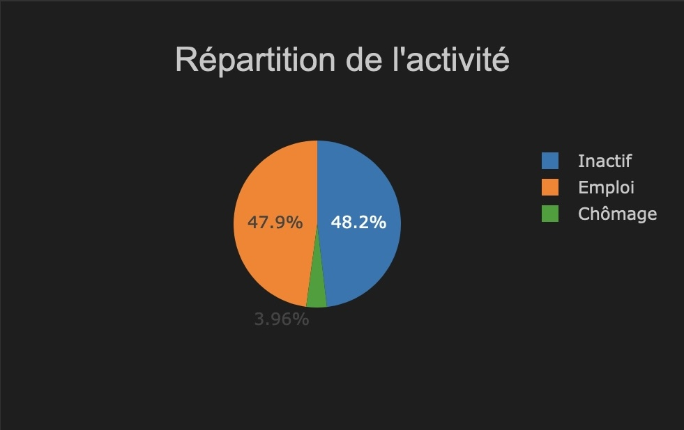
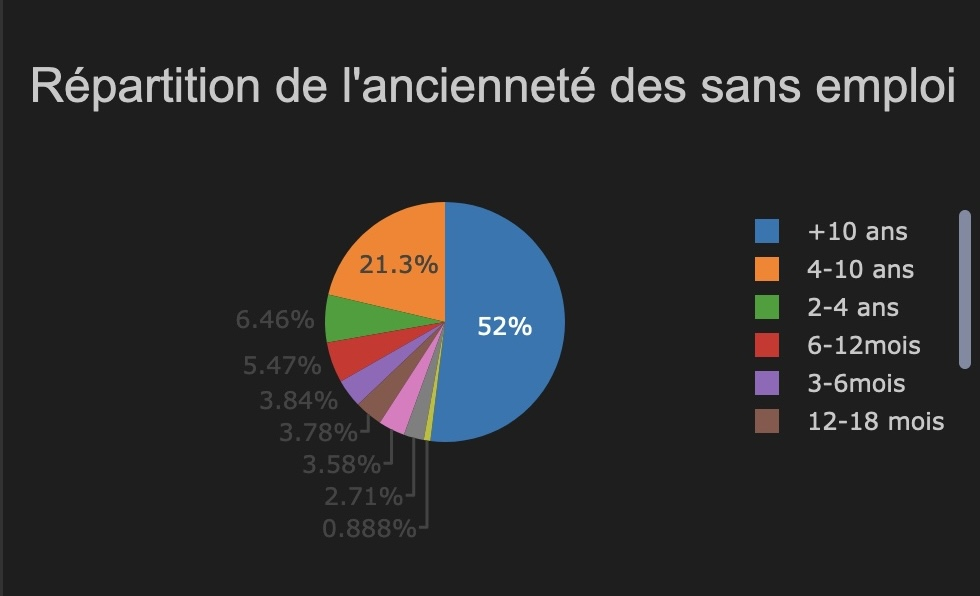
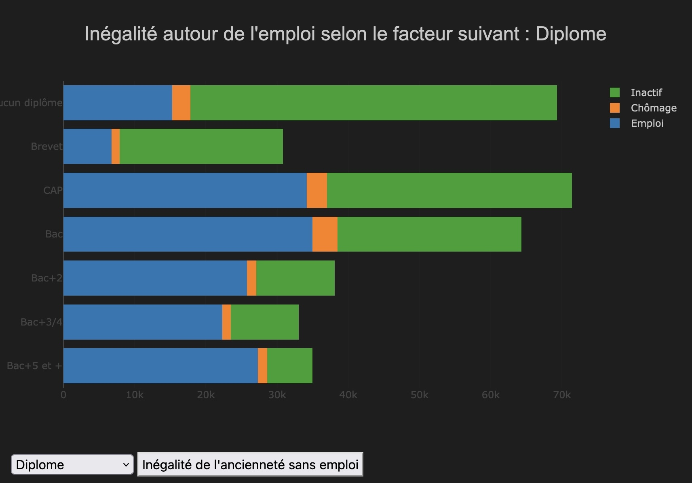

Ce graphique montre la répartition des personnes sans emploi selon la durée de leur chômage. On observe que 60,7 % des réponses sont manquantes, ce qui limite l’analyse précise, mais les données restantes sont révélatrices. Le chômage de longue durée est particulièrement élevé, avec 20,4 % des personnes au chômage depuis plus de 10 ans et 8,37 % depuis 4 à 10 ans. À l’inverse, les personnes au chômage depuis moins de 6 mois représentent une part assez faible.
Ce graphique met en avant un problème majeur du marché du travail : le chômage de longue durée. Plus une personne reste éloignée de l’emploi, plus il devient difficile pour elle de retrouver un travail. Cela s’explique notamment par :
Cette situation pourrait s’expliquer par plusieurs facteurs : des profils peu qualifiés ayant du mal à se reconvertir, ou encore des seniors exclus du marché du travail. La faible part des chômeurs de courte durée peut aussi refléter un manque d’offres rapides et accessibles.
Cette analyse démontre qu'il est nécessaire d’agir contre le chômage de longue durée. Il faut développer des formations adaptées et créer des opportunités professionnelles pour les publics les plus éloignés du marché du travail, afin d’éviter l’exclusion durable.

Ce graphique présente la répartition de la population entre actifs et inactifs. Les actifs regroupent les personnes qui possèdent un emploi tandis que les inactifs correspondent aux personnes qui ne participent pas au marché du travail tels que les étudiants, les retraités, les personnes au foyer, etc. . Cette distinction est essentielle pour comprendre le fonctionnement du marché du travail et évaluer le potentiel économique d’une population.
Ce graphique révèle un équilibre entre les personnes inactives et celles qui occupent un emploi, avec près de la moitié de la population inactive et l’autre moitié active. Le chômage, quant à lui, représente une part relativement faible (moins de 4 %).
Plusieurs facteurs peuvent expliquer un taux élevé d’inactifs :
Cette analyse souligne la nécessité de favoriser l’accès à l’emploi pour les publics inactifs qui souhaitent ou pourraient intégrer le marché du travail. Cela passe par des politiques d’accompagnement, de formation et de soutien à l’emploi adaptées à chaque profil.

Ce graphique de comparaison permet d’approfondir l’analyse précédente avec des taux qui varient en fonction du sexe, de l’âge, du diplôme et de la classé socio-professionnelle.
Nous pouvons d’abord constater un plus fort taux d’inactivité chez les femmes que chez les hommes. Cela peut s’expliquer par les modes de vie du passé dans lesquels les femmes devaient souvent rester à la maison s’occuper de leurs enfants pendant que leur mari travaillait. Bien que les chiffres aient tendance à plus s’équilibrer aujourd’hui, l’influence du passé existe toujours.
Ensuite, au niveau de l’âge les 15-25 ans et les 50-64 ans sont les plus touchés parmi les actifs. Cela est probablement dû à une part des 15-25 ans qui font des études et à une embauche moins facile à partir d’un certain âge. Chez les + de 65 ans, la grosse part de personne en inactivité depuis plus de 10 ans coïncide avec l’âge du départ à la retraite.
Enfin, concernant les diplômes et les classes socio-professionnelle, nous pouvons clairement observer un lien entre la qualification et la facilité d’emploi. En effet, que ce soit au niveau du taux de chômage, d’inactivité ou même de la durée d’inactivité, plus les diplômes sont prestigieux et plus les classes sont aisées et moins ces taux sont haut.